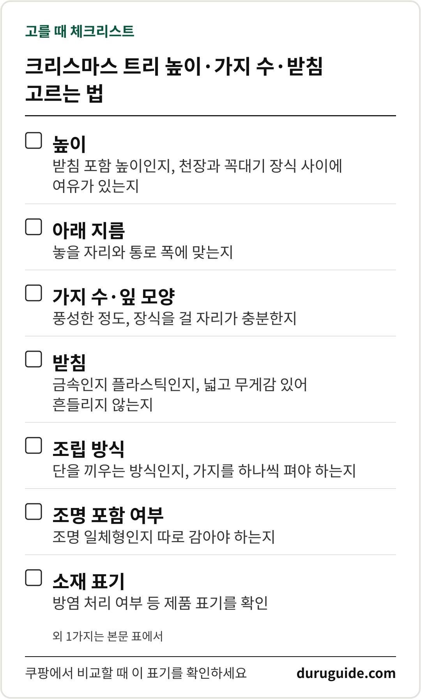

크리스마스 트리 높이·가지 수·받침 고르는 법, 놓을 자리부터 재세요
안 사도 되는 경우
해마다 꺼내 쓸 트리가 이미 있거나 한 철만 잠깐 두고 싶다면, 장식만 바꾸거나 작은 대안으로도 충분해요.
이런 상황이죠
12월이 다가오면 거실에 트리를 하나 두고 싶어지죠. 그런데 막상 고르려고 하면 높이도 여러 가지, 가지가 풍성한 것과 성긴 것, 받침 모양까지 달라서 어떤 게 우리 집에 맞는지 헷갈려요. 사진으로 보면 다 예쁜데 집에 들여놓고 나서야 천장에 닿거나, 통로를 막거나, 생각보다 휑해 보이는 일이 생기기도 해요.
왜 생기나
트리 고르기가 어려운 건 사진과 실제 공간의 차이 때문이에요.
- 높이 착시 — 제품 높이는 받침을 포함하는지, 꼭대기 장식을 올리면 얼마나 더 높아지는지에 따라 체감이 달라요.
- 폭을 잊기 쉬움 — 높이만 보고 고르면 아래쪽 지름이 커서 생각보다 자리를 많이 차지해요.
- 가지 수와 풍성함 — 같은 높이라도 가지 수와 잎 모양에 따라 풍성해 보이는 정도가 많이 달라요.
- 받침 안정성 — 받침이 작거나 가벼우면 장식을 많이 달았을 때 기울어질 수 있어요.
사기 전에 먼저 해볼 것
- 놓을 자리 재기 — 천장 높이, 놓을 자리의 가로·세로를 재고 문이 열리는 방향과 지나다니는 길을 확인해요. 꼭대기 장식을 올릴 여유도 남겨 두세요.
- 집에 있는 것부터 꺼내기 — 예전에 쓰던 트리나 조명, 장식이 창고에 있는지 먼저 확인해요. 장식만 새로 바꿔도 분위기가 꽤 달라져요.
- 작은 대안 생각하기 — 공간이 좁다면 탁상용 작은 트리, 벽에 거는 장식, 화분에 조명을 감는 방법도 있어요.
- 보관 공간 확인 — 행사가 끝난 뒤 넣어 둘 자리가 있는지도 봐 두세요. 분해해도 상자 크기가 생각보다 클 수 있어요.
해마다 꺼내 쓸 트리가 이미 있거나, 한 철만 잠깐 두고 싶은 정도라면 큰 트리를 새로 사지 않아도 괜찮아요.
고를 때 체크리스트
| 확인할 것 | 보는 기준 |
|---|---|
| 높이 | 받침 포함 높이인지, 천장과 꼭대기 장식 사이에 여유가 있는지 |
| 아래 지름 | 놓을 자리와 통로 폭에 맞는지 |
| 가지 수·잎 모양 | 풍성한 정도, 장식을 걸 자리가 충분한지 |
| 받침 | 금속인지 플라스틱인지, 넓고 무게감 있어 흔들리지 않는지 |
| 조립 방식 | 단을 끼우는 방식인지, 가지를 하나씩 펴야 하는지 |
| 조명 포함 여부 | 조명 일체형인지 따로 감아야 하는지 |
| 소재 표기 | 방염 처리 여부 등 제품 표기를 확인 |
| 보관 크기 | 분해했을 때 상자나 가방 크기 |
트리 주변 안전도 챙겨 주세요. 난방기나 촛불 가까이에 두지 말고, 조명은 실내용 표기 제품을 쓰며 외출하거나 잘 때는 꺼 두세요. 작은 장식이나 구슬은 어린아이나 반려동물이 삼킬 수 있으니 손이 닿지 않는 높이에 달아 주세요.
이런 분께는 맞지 않아요
아이나 반려동물이 트리를 잡아당길 수 있는 집이라면 큰 트리보다 벽걸이 장식이나 높은 곳에 두는 작은 트리가 더 편할 수 있어요. 보관 공간이 전혀 없는 집도 큰 트리는 부담이 돼요.
추천 제품 찾기
먼저 놓을 자리의 높이와 폭, 조명을 따로 달지 여부를 정하세요. 쿠팡에서 크리스마스 트리를 볼 때는 받침 포함 높이, 아래 지름, 가지 수, 받침 소재, 조명 포함 여부 표기를 비교해 보세요. 현재 가격은 쿠팡에서 확인해 주세요.

위 표의 표기를 비교해 보세요.
현재 가격은 쿠팡에서 확인해 주세요.
이 포스팅은 쿠팡 파트너스 활동의 일환으로, 이에 따른 일정액의 수수료를 제공받습니다.